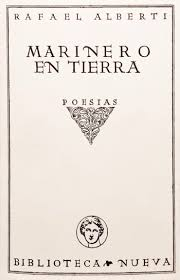
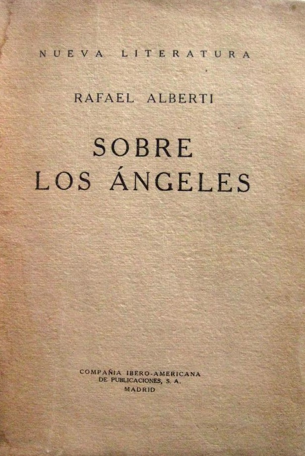
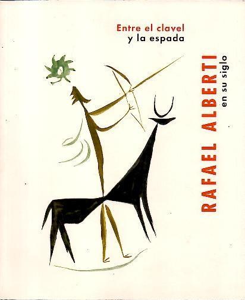
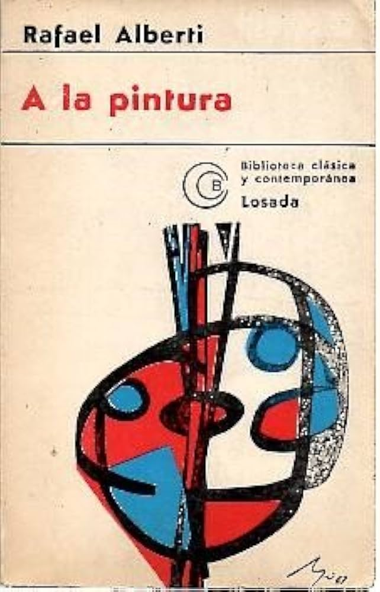

Rafael Alberti

Libros:
Marinero en tierra

Poemas:
El mar. La mar
Poema recitado:
Voz de Rafael Alberti
Voz de Rafael Alberti
Te digo adiós, amor, y no estoy triste
Poema recitado:
Lo que dejé por ti
Poema recitado:
Sobre los ángeles

Poemas:
El ángel de los números
Poema recitado:
Voz de Rafael Alberti
Voz de Rafael Alberti
Nocturno
Poema recitado:
Voz de Rafael Alberti
Voz de Rafael Alberti
Cantautores:
Paco Ibañez
Paco Ibañez
Entre el clavel y la espada

Poemas:
Se equivocó la paloma
Poema recitado:
voz de Rafael Alberti
voz de Rafael Alberti
Cantautor/a:
Joan Manuel Serrat
Joan Manuel Serrat
A la pintura

Poemas:
Galope
Cantautor y poema recitado:
Paco Ibáñez y Rafael Alberti
Paco Ibáñez y Rafael Alberti